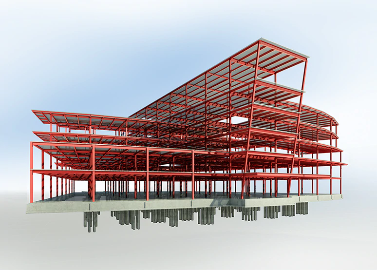
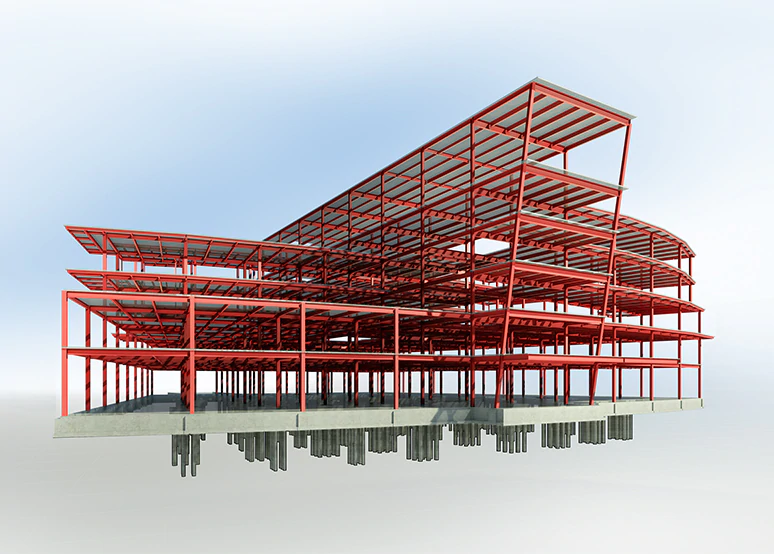

Certificación del ingeniero civil

La certificación es una herramienta para validar el dominio y conocimiento de una materia, una tecnología o un conjunto de competencias. Actúa como una credencial tangible que demuestra que un individuo ha cumplido con un conjunto definido de criterios y estándares establecidos por una autoridad reconocida en el campo. Esto significa que ha adquirido, a través de estudios formales o experiencia laboral, un nivel de experiencia y habilidad que es reconocido y valorado en la industria.
1¿Quien realiza la certificación al Ingeniero Civil?
En México el CICM es quien realiza las certificaciones a los ingenieros civiles, esta asociación realiza múltiples pruebas para comprobar que el ingeniero esté realmente capacitado para obtener su certificado.
2¿Qué es el CICM?
El colegio de ingenieros civiles de México es una asociación civil, la cual tiene por objeto asegurar el ejercicio profesional de la ingeniería civil en México se realice en el más alto plano legal, ético y moral.
Galeria
 



Experto en:

Analicis

Diseño estructural